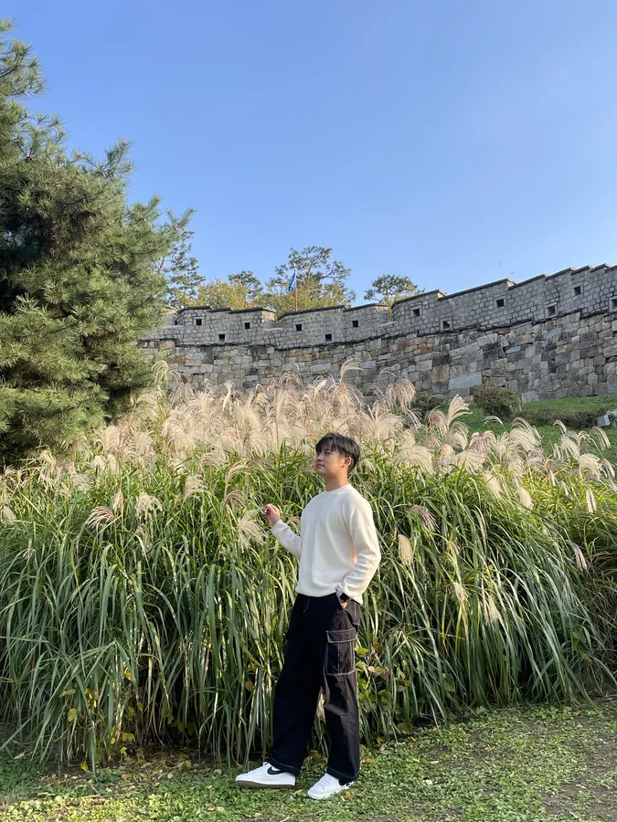
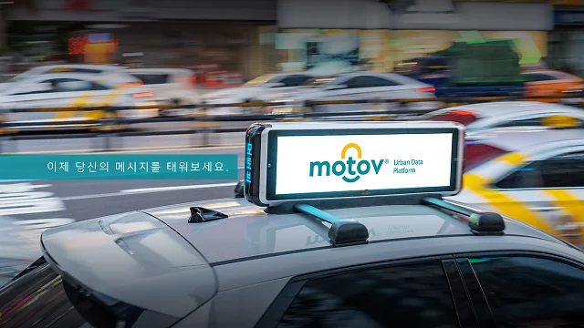

UWB·VIO 기반 주차 궤적 생성
자동주차 기능을 위한 주차 궤적 생성 방법입니다. 특허 10-2274806 · 2021.06 등록
IoT · Edge AI · Embedded
꾸준히, 즐겁게 개발하고 있습니다. 센서와 펌웨어부터 모델 배포, 장치 운영까지 현장에서 쓰이는 시스템을 개발해 왔습니다.
주요 경험 보기
Selected experience
MOTOV · 2022.10–2024.06
모토브의 VRD는 양면 디스플레이로 광고를 송출하고 20여 종의 센서로 장치와 주변 환경을 관측합니다. Android 기반 소프트웨어 개발과 장치 운영을 담당했습니다.

LSTM 오토인코더가 10종의 센서 데이터를 분석해 장치 이상을 감지하도록 개발했습니다. 데이터 수집, 학습, 배포, 추론 소프트웨어와 실시간 모니터링을 개발했습니다. 도심 환경 데이터를 장치에서 추론하는 Android 서비스도 개발·운영했습니다.
EKF로 GPS와 IMU 데이터를 융합해 위치 오차율을 기존 대비 40% 줄였습니다. Wi-Fi AP 정보를 활용한 위치 추정에서는 기존 대비 60% 줄였습니다.
동적 주소를 사용하는 VRD를 원격으로 진단할 수 있는 관제 시스템과 운영 이슈 대응용 Django 백엔드·API를 개발했습니다. AWS, ActiveMQ, Kafka, Elasticsearch, Kibana를 활용해 장치 데이터와 로그를 수집하고 모니터링했습니다.
ESP32와 FreeRTOS에서 Wi-Fi Mesh·BLE 기반 콜드체인 장치 펌웨어를 개발했습니다. ESP32 기반 Wi-Fi 정보 수집 기능과 Rockchip 기반 무선 통신·영상 응용 개발에도 참여했습니다. SUMO와 Ray로 강화학습 파이프라인을 구축했습니다.
자동주차 기능을 위한 주차 궤적 생성 방법입니다. 특허 10-2274806 · 2021.06 등록
대학원 국책과제에서 STM32F4와 nRF52840에 DW1000·DW3000 모듈을 탑재해 실시간 위치 추정 시스템을 구현했습니다. 석사과정 논문에서는 iPhone의 UWB 기능을 활용했습니다.
기술이전 과제에서 DNN·CNN으로 RF 채널 임펄스 응답을 분석해 가시선 여부를 판별했습니다. STM32에서 데이터를 수집하고 NLOS 신호를 분류하는 펌웨어도 개발했습니다.
Transformer를 적용한 무기체계 이상 감지 연구를 수행하고 국제 학회에서 발표했습니다.
nRF52840과 FreeRTOS 기반으로 태스크 구조를 설계하고 UWB 1:N 통신과 BLE 세션 수립 방식을 개발했습니다.
Swift로 iOS 앱을 개발하고, 확장 칼만 필터로 UWB의 절대 좌표계와 ARKit의 상대 좌표계를 융합해 위치 추정의 안정성을 높였습니다.
적응형 확장 칼만 필터와 DNN 기반 NLOS 분류 모델을 설계하고 STM32에 탑재했습니다. UWB 데이터 수신 인터페이스와 위치 표출 GUI도 만들었습니다.
상용 UWB RTLS의 원시 데이터를 TCP 소켓으로 수신하는 라이브러리를 만들고, 수집한 데이터로 EKF 기반 알고리즘을 검증했습니다.
OpenStreetMap으로 서울 도로를 모델링하고 SUMO와 Python을 연동했습니다. PyQt에서 25개 자치구의 교통량·미세먼지를 조회하고 주요 진입로 12곳의 흐름을 제어할 수 있게 했습니다.
GPS가 약한 터널에서도 위치를 추정하도록 VIO와 GPS를 융합했습니다. 좌표계 변환과 관성 센서 누적 오차를 줄이는 보정 알고리즘을 개발했습니다.
Raspberry Pi와 OpenCV로 영상에서 배경을 제거하고 객체를 분류해 출입 여부를 판별했습니다. 계수 결과는 MongoDB와 연동해 앱에서 실시간으로 확인할 수 있게 했습니다.
Arduino로 미세먼지·온습도·이산화탄소 센서 값을 읽고 Bluetooth로 지상 관측소에 전송했습니다. 드론 하드웨어도 직접 구성했습니다.
Technical skills
NumPy · Pandas · Selenium · Beautiful Soup · PySide · PyQt · ROS · RViz · SUMO · CNN · RNN · LSTM · Autoencoder · Transformer · GPT-OSS · Mistral · GLM · LFM
Android · iOS · Linux · Windows · FreeRTOS · Raspberry Pi · AVR · Nordic · TI · Jenkins · Protobuf · REST · gRPC · RTSP · Lucene · MongoDB · MySQL · Firebase · GitLab · Bitbucket · Jira · Confluence
Career